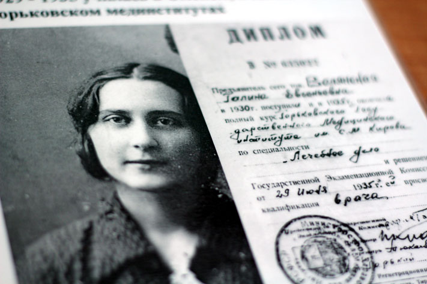
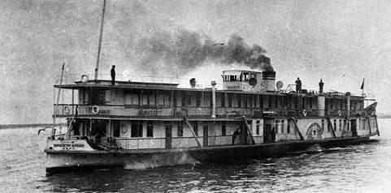
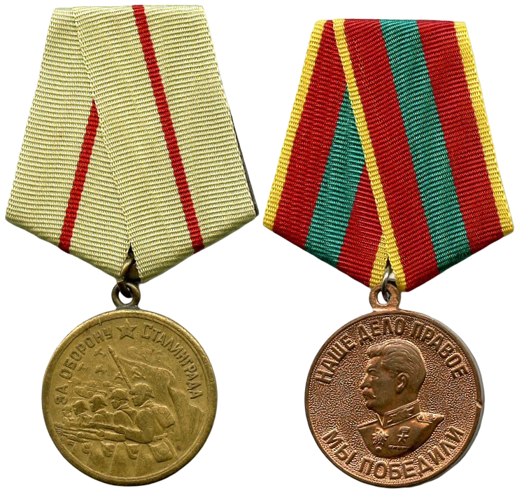
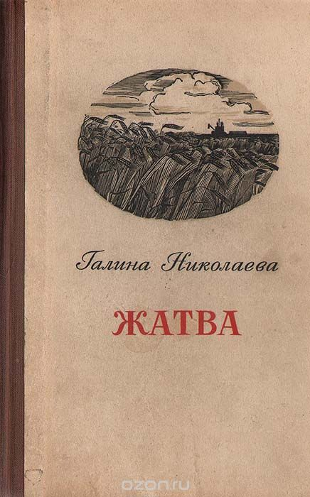
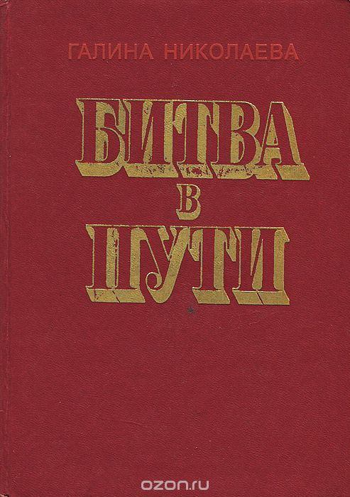

Галина Волянская родилась в деревне Усманка (ныне это Новорождественское сельское поселение, Томский район Томской области) 18 февраля 1911 года (по другим данным — 4 марта 1911) в семье юриста Евгения Ивановича Волянского и учительницы Милетины Венедиктовны Волянской. После рождения дочери семья переселилась на 60 км северо-западнее, в село Мазалово. Некоторое время маленькая Галя жила с матерью в Пскове. В 1915 г. семья эвакуировалась в Томск к родственникам. Здесь, в 1916 году, Галя ходила в детский сад при гимназии Тихонравовой. В 1918-1923 гг. жила с родителями в Горном Алтае, Бийске, Барнауле. В 1922 году Галя одно полугодие проучилась в школе в Барнауле. С детства писала стихи, занималась в школьном литературном кружке. В 1927 году родители Гали развелись. Также в этом же году она окончила среднюю трудовую школу с кооперативным уклоном в г. Новосибирске.
В 1929 году Галина поступила в Омский государственный медицинский институт и вышла замуж за Александра Портнова. В связи с переводом мужа в Горький (совр. г. Нижний Новгород) Галина с 1930—1935 годах училась в медицинском институте в Горьком. В 1934 рассталась с мужем. В 1935 году окончила Горьковский медицинский институт по специальности "лечебное дело". В 1935—1939 годах была аспирантом, а потом ассистентом кафедры фармакологии того же института. В 1937 году её отец и муж были арестованы (впоследствии оба реабилитированы), из-за чего ей приходится уйти из института. В 1938—1942 годах работает преподавателем Горьковского медицинского техникума.
22 июня 1941 года перевернуло обычную жизнь Галины Евгеньевны Николаевой, как и миллионов других граждан Советского Союза. В тот же день зрелая, тридцатилетняя, очень привлекательная женщина отправилась в военкомат со словами: "Фронту нужны врачи". Но с детства страдающей пороком сердца (порок митрального клапана) и прогрессирующей глухотой женщине ответили, что и в тылу ей найдется работа. С самого начала войны она добивалась отправки на фронт, но получала отказы.

И только в начале 1942 года она получила назначение в плавучий госпиталь "Композитор Бородин" в качестве вольнонаемного врача-ординатора. Пароход был передан Волжским объединенным речным пароходством в Главное санитарное управление Советской Армии весной 1942 г. На его борту рядом с прежним названием "Композитор Бородин" соседствовало и другое - СТС № 56 (санитарно-транспортное судно № 56). Медперсонал госпиталя был сформирован в основном из горьковчан. Кроме врача Галины Евгеньевны Николаевой, на СТС № 56 работали медсестры: Маша Осипова, Маша Окунева, Нина Малышева и др. Начальником санитарного транспорта была назначена тридцатилетний врач Клавдия Ивановна Горшкова из Саратова. Остаток весны и половину лета судно провело в рейсах. Первое время все обходилось благополучно, но скоро фронт подступил к Сталинграду и в мирной до этого волжской воде стали все чаще и чаще попадаться мины, в небе — летать вражеские самолеты. СТС № 56 было передано в подчинение фронтовому эвакогоспиталю № 6 Сталинградского фронта и стало принимать раненых только из Сталинграда.
В последних числах июля 1942 г. СТС № 56, приняв в Сталинграде очередную партию раненых, шло на Астрахань. До города осталось около пятидесяти километров, когда 28 июля на закате над ним появились фашистские самолеты. Несмотря на то, что на судне были размещены эмблемы Красного Креста, в него полетели бомбы. Прямых попаданий не было, а вот пулеметные очереди достигли своей цели — появились убитые и раненые. Капитаном судна и начальником санитарного транспорта было принято решение пристать к берегу и укрыться под кронами прибрежных деревьев. Но фашистские летчики не оставляли судно в покое и продолжали охотиться за ним. Стены многих кают были прошиты пулеметными очередями. Появилась угроза возникновения пожара, получения пробоины и затопления. Раненых стали эвакуировать на берег и прятать в складках местности. Несмотря на непрекращающийся пулеметный огонь, медики самоотверженно продолжали эвакуацию. На долю каждой медсестры приходилось более тридцати только тяжелораненых, которых нужно было выносить на носилках. По конец у них совсем не осталось сил, их руки покрыли кровавые мозоли, но свой долг они выполнили с честью. Впоследствии младший лейтенант Алексей Сухотин рассказывал:
На следующий день, погрузив раненых, судно отправилось на Астрахань. Здесь они были сданы в госпитали города. А СТС № 56 отправилось в очередной рейс за ранеными бойцами. Только счастливый случай помог Галине избежать трагической судьбы, которая постигла ее друзей и сослуживцев с СТС № 56. «Композитор Бородин» шел из Сталинграда, когда ей передали приказ перейти на встречный, направляющийся за ранеными в Сталинград, транспорт. А на обратном пути она увидела лишь догоревший остов до боли знакомого судна. Гибель товарищей, среди которых была ее близкая подруга, врач Елизавета Бахирева, стала личной трагедией Галины.

Во время одного из рейсов при эвакуации раненых из Сталинграда Галина была контужена. С 1944 г. она работала в Сталинградском эвакогоспитале № 56, затем в госпиталях Северного Кавказа. В последний год войны она работала диетврачом в эвакогоспитале № 2442 г. Нальчика. Сохранилась характеристика, выданная заместителем начальника эвакогоспиталя майором Кочергиным, в которой сказано:
Галина Евгеньевна Николаева была награждена медалями «За оборону Сталинграда» и «За доблестный труд в Великой Отечественной войне 1941-1945 гг.»
После окончания Великой Отечественной войны Галина Евгеньевна Николаева активно занималась литературным трудом, много ездила по стране и создала несколько крупных произведений, которые принесли ей всесоюзную и мировую известность.

Молодая писательница, ища новые темы для своих произведений, выбрала главной темой послевоенную деревню. Она много ездила по колхозам различных областей страны. Её интересовало всё — люди, агротехника, цифры колхозных годовых отчетов. В 1947 году по заданию редакции журнала «Знамя» она отправилась в длительную командировку по северу Горьковской области. В Уренском районе она познакомилась с работой колхоза «Трактор», слава о котором в те трудные годы перешагнула за пределы области. По итогам командировки в апреле 1948 года в газете «Горьковская коммуна» был опубликован её очерк «Колхозное богатство», а в центральной прессе были напечатаны очерки «Колхоз «Трактор» (1948 г.) и «Черты будущего» (1949 г.), имевшие большой общественный резонанс.
В ноябре 1948 года писательница приступила к написанию своего первого крупного произведения - романа «Жатва», который был издан в 1950 году. В 1955 году на Волге Николаева написала цикл стихов «Через десятилетие». После успеха первого романа много работала как публицист: писала очерки, статьи и много ездила. Она побывала на целине и в колхозах Краснодарского края. Впечатления о поездках нашли отражение в её книге «Повесть о директоре МТС и главном агрономе», которая вышла из печати в 1954 году. В этом же году писательница приступила к написанию главного произведения своей жизни — романа «Битва в пути», который вышел в 1957 году.
Также писательница, пережившая войну и личную трагедию, выступила с активным осуждением Бориса Пастернака, осужденного советской властью и Союзом писателей за публикацию романа «Доктор Живаго», так как произведение содержало «дух неприятия Октябрьской революции» и критику советского строя:

В последние годы жизни Г. Е. Николаева работала над романом о физиках «Сильное взаимодействие». Это было трудное для писательницы время — неизлечимая болезнь приковала её к больничной койке. Но и в этих тяжких условиях работа над книгой не прекращалась ни на один день. На даче, в больничной палате, где бы ни находилась писательница — её окружали газеты и книги, монографии, исследования, учебники.
Галина Евгеньевна Николаева умерла 18 октября 1963 г. после долгой и продолжительной болезни в Москве и похоронена на Новодевичьем кладбище. Памятник на ее могиле создал известный скульптор Э. Неизвестный. Многие произведения вышли уже после её смерти: статьи, стихотворения, рассказы («Любовь», «Москвичка», «Детство Владимира», «Тина»), дневник «Наш сад», глава «Я люблю нейтрино» из романа «Сильное взаимодействие».
Наверх